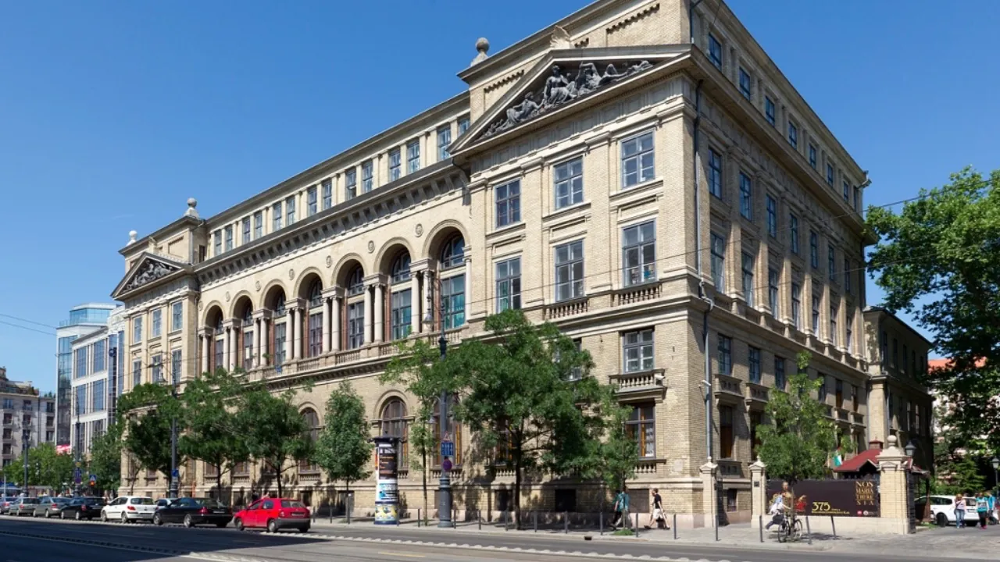
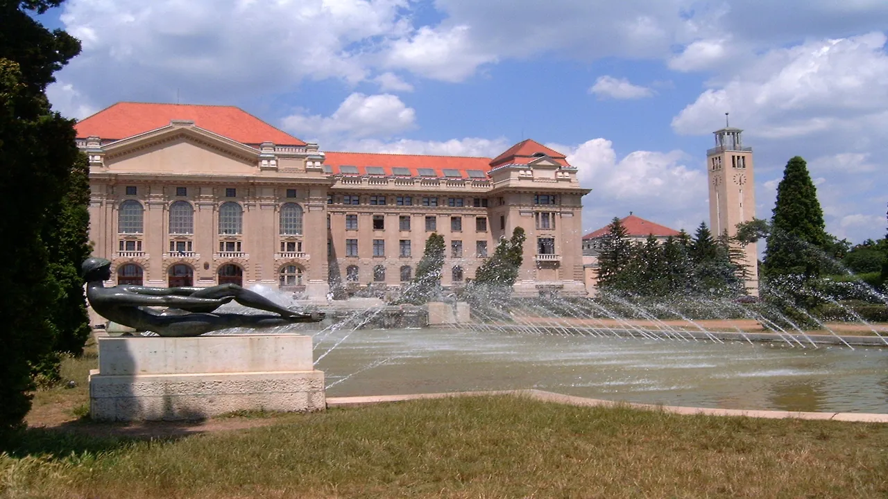
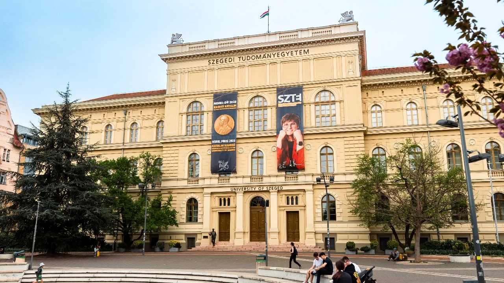

Macaristan, Avrupa Birliği üyesi bir ülkede İngilizce eğitim alarak uluslararası geçerliliğe sahip bir diploma edinmek isteyen öğrenciler için güçlü bir seçenek sunar. Üniversiteler YKS puanı talep etmez; başvuruları kendi kabul süreçleri üzerinden değerlendirir. Lisans programları 3–4 yıl, yüksek lisans programları 2 yıl, tıp ve diş hekimliği gibi bütünleşik programlar ise 5–6 yıl sürer. Eğitim ve yaşam giderleri birlikte yıllık 8.500 – 14.000 € aralığında kalır.
Hun Education olarak, 20 seçkin üniversitede sunulan 490 İngilizce program arasından öğrencilerimizin hedeflerine en uygun seçeneği belirliyor; başvurudan kabul ve vize sürecine kadar her adımda yanlarında oluyoruz.
Bu sayfada Macaristan'daki eğitim sisteminin nasıl işlediğini, hangi şehirde neyin öne çıktığını, öğrenci vizesinin nasıl alındığını ve diplomanızın Türkiye'de ne anlama geldiğini anlatıyoruz.
Neden Macaristan?

Macaristan'ı Türk öğrenciler için öne çıkaran şey tek bir avantaj değil, birkaç etkenin bir arada çalışması. Bunların başında bütçe gelir: öğrenim ücretleri de yaşam giderleri de Batı Avrupa'nın belirgin şekilde altında seyreder ve bir akademik yılı toplamda 8.500 – 14.000 € bandında tutar.
İkinci etken program çeşitliliği. Tıptan pilotaja, mühendislikten sanata kadar uluslararası öğrenciye açık geniş bir yelpaze var ve bunların tamamı İngilizce yürür. Üstelik bu programlar yeni kurulmuş değil; Pécs Üniversitesi 1367'de kuruldu, Semmelweis'te tıp eğitimi 1769'a dayanır ve Macar asıllı bilim insanları bugüne kadar 16 Nobel Ödülü kazandı.
Üçüncüsü ise konum ve topluluk. Viyana, Bratislava ve Prag kara yoluyla birkaç saat uzaklıkta; ülkede 40 bine yakın uluslararası öğrenci okur ve Budapeşte, Debrecen ile Pécs'te yerleşmiş bir Türk öğrenci ağı sizi bekler. Yani gittiğinizde yalnız kalmıyorsunuz.
Bu programlardan hangisine gerçekçi şansınız var? İlk görüşmede söyleyelim. Ön Görüşme Al





Eğitim sistemi ve dereceler
Macaristan, Bologna sistemine uyumlu üç kademeli bir yapı kullanır. Tıp, diş hekimliği, eczacılık ve mimarlık gibi alanlar ise bütünleşik (tek aşamalı) programlarla yürütülür.
| Seviye | Süre | Yıllık ücret | Giriş şartı |
|---|---|---|---|
| Hazırlık | 1 yıl | yıllık 2.500 €'dan | Üniversitenin kendi sınavı |
| Lisans | 3 – 4 yıl | 3.000 – 5.000 € | Lise diploması · B2 düzeyi İngilizce |
| Yüksek lisans | 2 yıl | 4.000 – 6.000 € | Lisans diploması · üniversitenin değerlendirmesi |
| Doktora | 3 – 4 yıl | 6.000 – 8.000 € | Yüksek lisans diploması |
| Bütünleşik (tıp, diş) | 5 – 6 yıl | 15.800 € – 19.900 $ | Kimya ve biyoloji giriş sınavı |
Eğitim dili
Uluslararası programların tamamı İngilizce yürütülür ve başvuru için Macarca bilmenize gerek yok. Lisansta pratikte B2 seviyesi beklenir, yüksek lisansta IELTS 6,5 isteyen üniversiteler var; ancak okulların çoğu belge yerine kendi mülakatını yapar. Seviyeniz yetmiyorsa üniversitelerin İngilizce hazırlık programlarına başvurabilirsiniz. Macarca ise günlük hayat ve staj olanakları açısından avantaj sağlar; birçok üniversite başlangıç seviyesi Macarcayı ücretsiz veya çok düşük ücretle verir.
Hangi şehirde okumalı?

Şehir seçimi en az üniversite seçimi kadar belirleyici olur; çünkü yaşam maliyeti, ulaşım ve öğrenci topluluğu şehre göre değişir.
| Şehir | Bölge | Öne çıkan |
|---|---|---|
| Budapeşte | Orta Macaristan | En geniş program çeşitliliği · en yüksek yaşam maliyeti |
| Debrecen | Doğu Macaristan | Sağlık ve mühendislikte köklü gelenek · katalogda 130'dan fazla program |
| Szeged | Güney Macaristan | Kampüs ile şehir iç içe · daha düşük maliyet |
| Pécs | Güneybatı | Ülkenin en eski üniversitesi · yürünebilir şehir |
| Miskolc | Kuzeydoğu | Mühendislik ve yer bilimleri |
| Dunaújváros | Orta Macaristan | Pilotluk ve makine mühendisliğini birleştiren program |
| Nyíregyháza | Kuzeydoğu | Düşük yaşam maliyeti |
| Kecskemét | Orta Macaristan | Sanayi bağlantılı mühendislik |
Vize, oturum ve denklik
Türk vatandaşları Macaristan'da öğrenim için D tipi öğrenci vizesi ile giriş yapar. Vize başvurusunun temel belgesi üniversiteden gelen Nihai Kabul Mektubudur; ayrıca son 6 aylık banka hesap dökümü, konaklama kanıtı ve sağlık sigortası istenir.
Kabul mektubu
Üniversiteden nihai kabul alınır.
Konsolosluk başvurusu
En yakın Macaristan Konsolosluğuna randevu alınarak dosya sunulur.
Ülkeye giriş
Vize onaylandıktan sonra seyahat planlanır.
İkamet kaydı
Varıştan sonra ikamet izni işlemleri tamamlanır.
Vize dosyasını sizin yerinize biz kuruyoruz: hangi belgenin hangi sırayla hazırlanacağını, randevu takvimini ve konsolosluğun beklediği formatı biliyoruz. Kararı elbette konsolosluk verir, ama dosyanın eksiksiz gitmesi bizim işimiz.
Güvenceniz şu: vize çıkmazsa, konsolosluğun yazılı ret gerekçesi üniversiteye iletildikten sonra öğrenim ücreti genellikle 30 iş günü içinde iade edilir. Vize kararı resmî makama ait olduğu için hiçbir danışmanlık şirketi garanti veremez; size garanti sözü veren bir kaynağa temkinli yaklaşın.
Denklik ve mezuniyet sonrası
Diplomanızı Türkiye'de kullanmak istiyorsanız YÖK denklik sürecinden geçmeniz gerekir. Denklik; üniversitenin tanınırlığı, programın içeriği, eğitim süresi ve mezuniyet koşulları üzerinden değerlendirilir ve bazı alanlarda ek sınav istenebilir.
Bu adımı sonraya bırakmıyoruz: program seçerken denklik açısından dikkat edilmesi gereken noktaları birlikte gözden geçiriyoruz, böylece mezuniyette sürprizle karşılaşmıyorsunuz. Mevzuat değişebildiği için başvurudan önce YÖK'ün güncel kurallarını da doğrudan incelemenizi öneririz; kararı veren kurum YÖK olduğu için sonuç hakkında taahhüt vermiyoruz.
Sık sorulan sorular
Uluslararası öğrencilere yönelik programların büyük çoğunluğu İngilizce yürütülür. Macarca bilmek başvuru için şart değildir; günlük hayatta işe yarar ama derslerin gereği değildir.
Yurt dışında alınan diplomaların Türkiye'de kullanılabilmesi için YÖK denklik değerlendirmesi gerekir. Denklik; üniversitenin tanınırlığı, program içeriği, eğitim süresi ve mezuniyet koşullarına göre değerlendirilir ve bazı alanlarda ek sınav istenebilir. Kurallar değişebildiği için başvurudan önce YÖK'ün güncel mevzuatını doğrudan incelemenizi öneririz. Otomatik veya garantili denklik iddiasında bulunmuyoruz.
Öğrenci ikametiyle çalışma hakkı, süresi ve koşulları Macaristan mevzuatına tabidir ve değişebilir. Planlarınızı çalışma geliri üzerine kurmadan önce güncel düzenlemeyi resmî kaynaktan teyit edin.
Budapeşte en geniş program çeşitliliğini ve en büyük uluslararası topluluğu sunar ama yaşam maliyeti en yüksek şehirdir. Debrecen, Szeged ve Pécs benzer akademik kalitede daha düşük yaşam maliyetiyle öne çıkar. Seçim; bölümünüzün hangi şehirde açıldığına ve bütçenize bağlıdır.
Kaynaklar ve doğrulama
- Derece süreleri ve ücret aralıkları üniversitelerin resmî yayınlarından, şehir bilgileri Budapeşte ve Pécs'teki ekibimizin saha deneyiminden derlenir.
- Denklik konusunda bağlayıcı kaynak YÖK'ün güncel mevzuatıdır; vize konusunda ilgili konsolosluktur.
- Öğrenci çalışma hakkı Macaristan mevzuatına tabidir ve değişebilir.
Değişiklik günlüğü
- : İçerik editoryal ve SEO denetiminden geçirildi; kaynak beyanları güncellendi.
- : Sayfa yayına alındı; ücret aralıkları, başvuru takvimi ve giriş sınavı şartları güncel veriyle yazıldı.